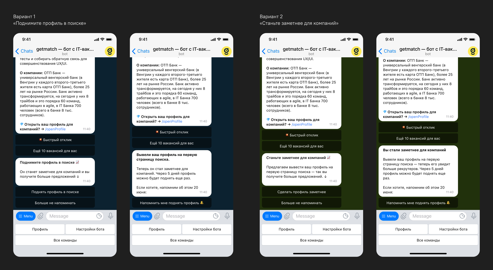
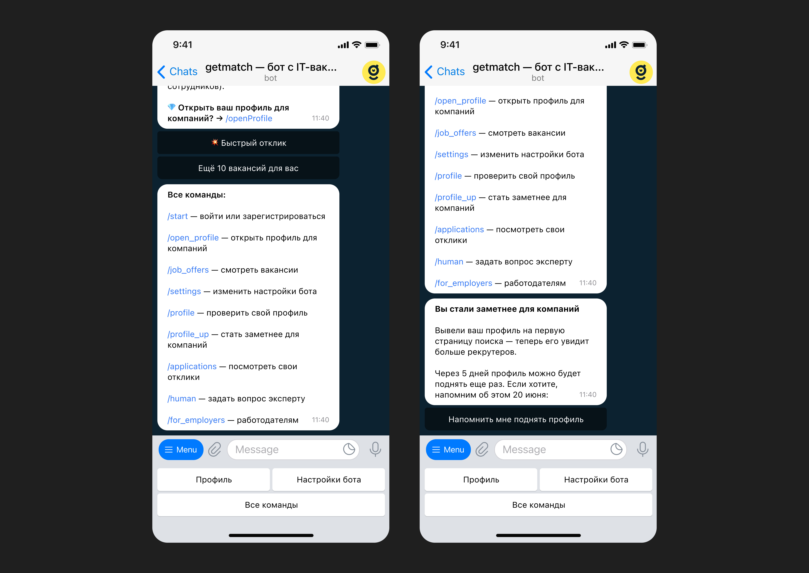
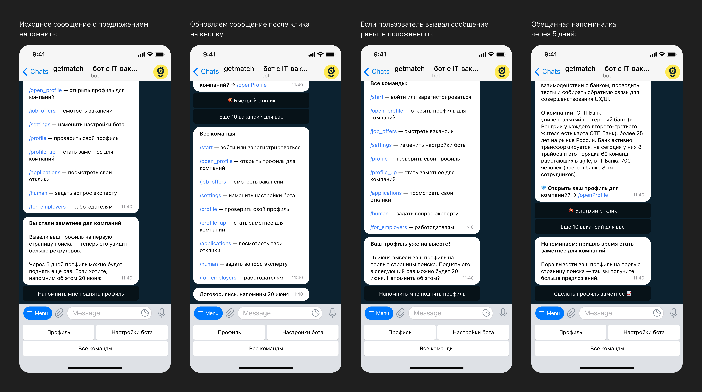
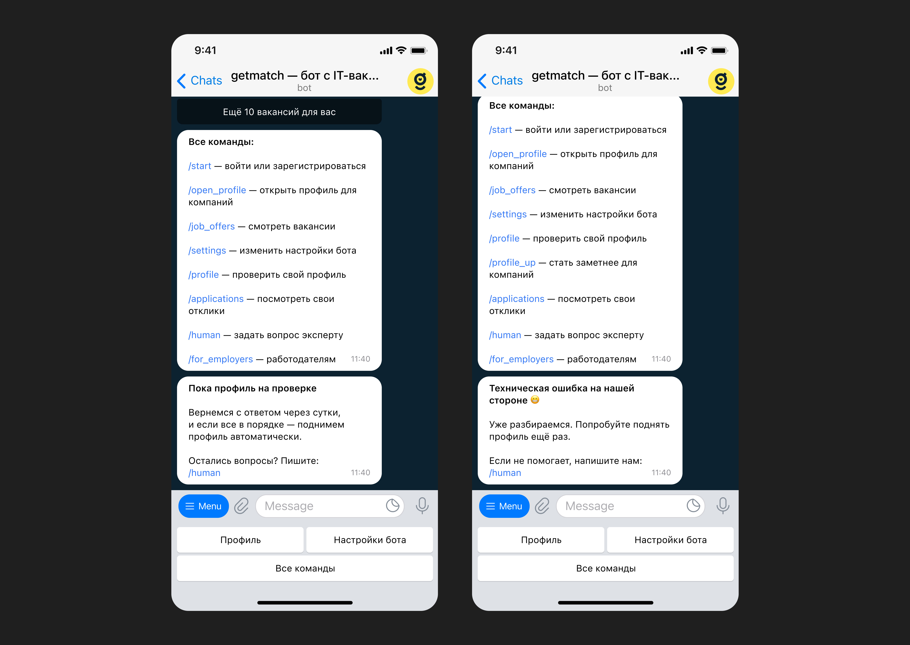

<!DOCTYPE html>
<html>
  <head>
    <meta charset="utf-8">
    <meta name="viewport" content="width=device-width, initial-scale=1.0">
    <meta property="og:type" content="article">
    <meta property="og:title" content="Поднятие профиля в getmatch • Артём Самсонов • Продуктовый дизайнер">
    <meta property="og:description" content="Механика, которая помогает хорошим кандидатам не потеряться в ленте рекрутера, а рекрутерам — видеть релевантных кандидатов, которых они могли упустить">
    <meta property="og:image" content="http://artemsamsonov.com/img/case-05.jpg">
    <link href="https://fonts.googleapis.com/icon?family=Material+Icons" rel="stylesheet">
    <link rel="stylesheet"><!-- Yandex.Metrika counter --> <script type="text/javascript" > (function(m,e,t,r,i,k,a){m[i]=m[i]||function(){(m[i].a=m[i].a||[]).push(arguments)}; m[i].l=1*new Date();k=e.createElement(t),a=e.getElementsByTagName(t)[0],k.async=1,k.src=r,a.parentNode.insertBefore(k,a)}) (window, document, "script", "https://mc.yandex.ru/metrika/tag.js", "ym"); ym(88097279, "init", { clickmap:true, trackLinks:true, accurateTrackBounce:true, webvisor:true }); </script> <noscript><div></div></noscript> <!-- /Yandex.Metrika counter -->
    <title>Поднятие профиля в getmatch • Артём Самсонов • Продуктовый дизайнер</title>
  <link href="./css/style.bundle.css" rel="stylesheet"></head>
</html>
<body class="body_light">
  <header class="header header_light">
    <div class="header__logo"><a href="index.html">Артём Самсонов</a></div>
    <div class="header__menu"><a class="header__menu-elem" href="https://t.me/forrrealism">telegram</a><a class="header__menu-elem" href="https://www.linkedin.com/in/a-samsonov/">linkedin</a><a class="header__menu-elem"><span>sayocean450🐶gmail.com</span></a></div>
  </header>
  <div class="content">
    <div class="article">
      <section>
        <h1>Поднятие профиля в getmatch</h1>
        <p class="article__annotation">Механика, которая помогает хорошим кандидатам не потеряться в ленте рекрутера, а рекрутерам — видеть релевантных кандидатов, которых они могли упустить.</p>
        <h2>Мой вклад</h2>
        <div class="article__tags">
          <div class="tag_light tag">Формулировка JTBD</div>
          <div class="tag_light tag">Usability Test</div>
          <div class="tag_light tag">UX-дизайн в Telegram</div>
          <div class="tag_light tag">UXW-лидерство</div>
          <div class="tag_light tag">Анализ количественных метрик</div>
        </div>
        <h2>Проблема</h2>
        <div class="article__2-cols">
          <div class="article__col"> 
            <h3>Для кандидатов</h3>
            <p>Хорошие профили быстро уходят вниз в ленте и не получают откликов. Кандидатам кажется, что они пропали для рекрутеров</p>
          </div>
          <div class="article__col">
            <h3>Для клиентов</h3>
            <p>Рекрутеры упускают подходящих кандидатов, потому что редко идут дальше второй страницы + кто-то подключился недавно</p>
          </div>
        </div>
        <h2>Job to be Done</h2>
        <div class="article__2-cols">
          <div class="article__col">
            <h3>Для кандидата</h3>
            <p>Напомнить о себе рекрутерам, чтобы не пропасть из поля зрения и получать приглашения на интервью</p>
          </div>
          <div class="article__col"> 
            <h3>Для компаний</h3>
            <p>Не пропустить хорошего кандидата, если я недавно работаю в системе или смотрю только новых</p>
          </div>
        </div>
        <h2>Задача</h2>
        <p>Сделать так, чтобы:</p>
        <ul>
          <li>хорошие кандидаты не терялись внизу списка</li>
          <li>хорошие кандидаты мягко напоминали о себе</li>
          <li>рекрутеры видели подходящих кандидатов</li>
        </ul>
        <h2>Решение</h2>
        <p> Спроектировали механику поднятия профиля в ленте. Кандидат может поднять профиль раз в 5 дней в нашем телеграм-боте.</p>
        <p>Перед разработкой провели юзабилити-тест: совместно с UX-писателем создали два варианта текста и показали каждый из них пятерым пользователям. Первый вариант опирался на действие («поднять профиль»), второй — на потребность («стать заметнее для компаний») ↓</p>
        <p class="article__image"><a href="../img/getmatch-calc-01.jpg" target="_blank"></a><span class="article__image-caption">Таблица ответов</span></p>
        <p>Респонденты поняли оба варианта, но победил второй флоу, опиравшийся на пользовательскую проблему «хочу стать заметнее для компаний». Победил во многом из-за сходства с уже знакомым функционалом HeadHunter.</p>
        <p class="article__image"><a href="../img/getmatch-calc-02.jpg" target="_blank"></a><span class="article__image-caption">Победил вариант справа</span></p>
        <p>Стать заметнее можно, нажав на соответствующую команду в меню:</p>
        <p class="article__image"><a href="../img/getmatch-calc-03.jpg" target="_blank"></a></p>
        <p>Если кандидат уже становился заметнее, мы можем напомнить о возможности спустя пять дней:</p>
        <p class="article__image"><a href="../img/getmatch-calc-04.jpg" target="_blank"></a></p>
        <p>Стать заметнее могут только пользователи с открытым профилем. Перед открытием профиль модерирует наш специалист. Пока профиль проверяется, стать заметнее не получится. Для этого кейса запоминаем желание юзера и выполняем позже:</p>
        <p class="article__image"><a href="../img/getmatch-calc-05.jpg" target="_blank"></a><span class="article__image-caption">А на скриншоте справа — текст технической ошибки</span></p>
        <p>Если пользователю надоело становиться заметнее, он может попросить больше не напоминать ему об этой возможности:</p>
        <p class="article__image"><a href="../img/getmatch-calc-06.jpg" target="_blank"></a></p>
        <h2>Результаты</h2>
        <ul>
          <li>
            <attr>NDA</attr> дополнительных наймов в месяц
          </li>
          <li>cтарые кандидаты начали получать предложения — у них возродилось ощущение, что сервис живёт и работает</li>
          <li>скрытия профилей рекрутерами выросли на 17%</li>
        </ul>
        <p>Период в 5 дней оказался слишком частым. Некоторые пользователи подбрасывали свой профиль каждый раз и мозолили рекрутерам глаза, провоцируя их скрывать себя из ленты навсегда. Одновременно с этим рекрутерам стало тяжелее добираться до только-только добавленных кандидатов.</p>
        <p>Через месяц после релиза мы увеличили период до 15 дней и стали показывать поднятые профили после свежих. Метрики одобрения поднятых кандидатов немного упали, но всё равно остались выше изначальных значений.</p>
        <h2>Чему я научился</h2>
        <p>Возможно, в нашем продукте при написании текстов лучше опираться на пользу и JTBD, а не на действие (NB: проверить в других фичах).</p>
        <p>Ещё лучше изучил особенности UX-проектирования интерфейсов для Telegram-ботов. </p>
        <p>Если мотивация и польза неявны, то фича вызовет отторжение (<a href="https://www.nirandfar.com/hooked/">Nir Eyal, Hooked Model</a>).</p>
        <div class="sign"><strong>Артём Самсонов,</strong>ведущий продуктовый дизайнер
          <p><a href="https://artemsamsonov.com">artemsamsonov.com</a> <br> telegram: @forrrealism <br> почта: sayocean450🐶gmail.com</p>
        </div>
      </section>
    </div>
  </div>
<script type="text/javascript" src="./js/bundle.js"></script></body>